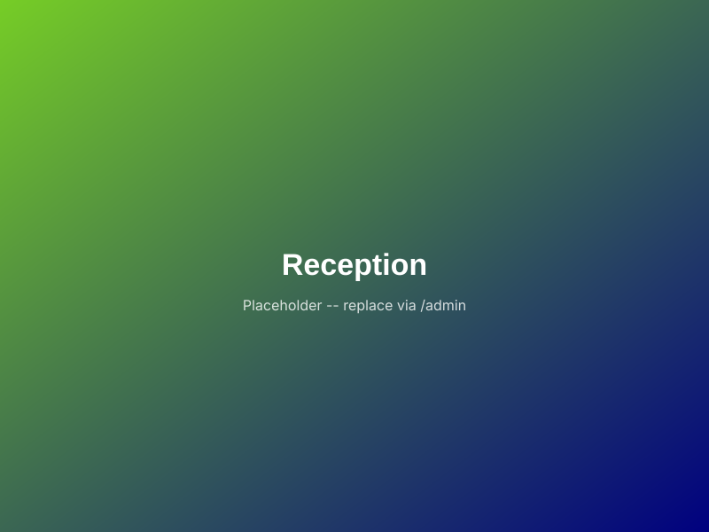

Founder & Strategic Oversight
View Full Portfolio
Reverend Minister Nancy Abakah Philips (Cert. Counsel)
Leads overall strategic direction, regional mobilisation, and pastoral care. Holds professional certification in Counselling, establishing the therapeutic and clinical frameworks behind Safe Space's youth mental health clinics, group therapy, and community support.